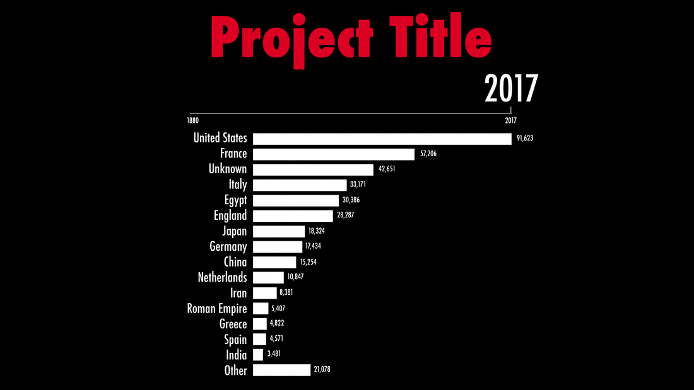

A History Of Collecting At The Met
This visualization dives into one of the world's most widespread collections of human culture, exploring its development over time and its reflection of history.
How has the The Metropolitan Museum of Art's collection evolved throughout it's illustrious history? Where do their artifacts and artworks come from, and when did they acquire pieces from which areas of the world?
As a student of Data Visualization at The Parsons School of Design, I was tasked with creating a quantitative visualization that focused on The Metropolitan Museum of Art's collection, who partnered with our studio course for the semester. I was floored by the both the breadth and depth of the museum's collection, which numbers in the hundreds of thousands of pieces that span over 5,000 years of human history. I wanted to look at the entirety of this collection to explore the origins of these artworks and how the institution's collection patterns had evolved in almost a century and a half of history.
Process
Partner: The Metropolitan Museum of Art
Data Source: The Metropolitan Museum of Art's Open Access CSV
Tools: Adobe Illustrator / CSS / HTML / JavaScript / Node / p5 / Pandas / Principle / Python
Data
The Met's open access collection data provides explanatory detail on over 420,000 pieces in its expansive collection. After bring this data into a pandas dataframe and exploring the different variables included, I ultimately decided to dive into country of cultural significance and object classification for this analysis. These variables allow us to shed insight on what regions in the world are most represented in the Met's collection, and what type of art the museum collects from these regions.
My main data challenge in this project was making sure I associated as many pieces as possible with the most relevant country of cultural significance. This involved identifying and standardizing inconsistencies within key fields in the dataset and covering gaps in the data where values were null. To map objects to countries, I first looked to the straight-foward association of the 'country' label, taking the first country listed in this field. If this field wasn't populated, I focused on the artist's nationality, then the country found with the primary artist's display biography, and finally the object's culture. This process allowed me to attribute 87% of objects to a country - the remaining 13% of objects were left out of this analysis.
The final data processing step was aggregating object totals at various levels of detail. I calculated year-to-year cumulative total for each country and classification, along with the combination of these two variables, and exported these statistics in JSON files for my front-end visualization. I maintained totals for the ten most popular countries in the collection, and the top five classifications within those countries.
Visualization

The main visual representation of data in this project is a clear and straightforward line graph, allowing for quick and easy comparisons across countries. The bright colors help the lines jump off the dark background, while the rainbow palette provides a familiar visual ranking system of countries. We're used to seeing rainbow colors in this type of order, which corresponds with the ranking of the most popular countries in the museum's collection - also represented by the order of countries in this view's legend.
While the rainbow palette provides a nice pop of color and a visual ordering system to our countries, it can sometimes be hard to dinsguish one point from another. In fact, no color palette is great at distinsuishing ten distinct data points. Hovering over a country label in our legend allows us to clearly highlight a specific country while displaying the cumulative count of objects The Met has collected from this country through the current year of our animation.

Clicking on a country in the legend allows us to see detail on which types of art The Met collects from this country. This view introduces a new cohesive and intuitive color palette based on the country's base color, with different shades assigned to each classification - those types of art that are most popular within a country are given the color's darkest shades and placed closest to our axis, with shades getting lighter from there.